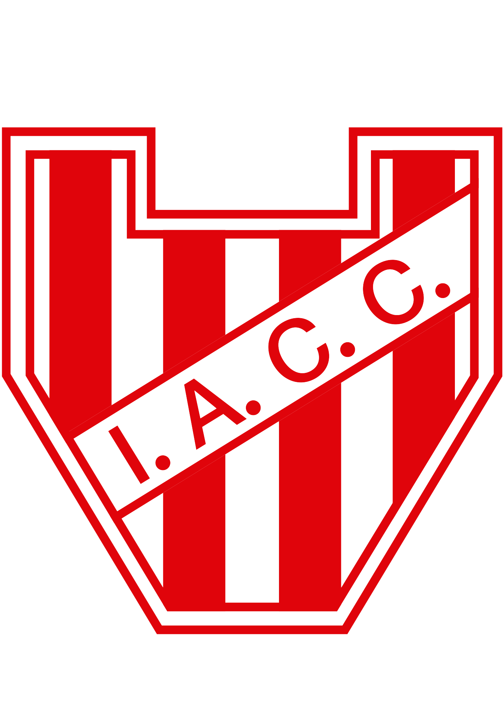

Los mejores equipos de primera
Talleres de Cordoba

El Club Atlético Talleres es una institución deportiva con sede en la ciudad de Córdoba,
Argentina. Sus principales actividades son el fútbol masculino y femenino,
aunque también se practican el hockey, vóley, balonmano, patín artístico, karate, futsal y básquet en la institución.
Belgrano de cordoba

El Club Atlético Belgrano, es un club deportivo de la ciudad de Córdoba en Argentina.
Actualmente se desempeña en la Liga Profesional de Fútbol Argentino
Instituo de Cordoba

Instituto Atlético Central Córdoba, conocido como Instituto de Córdoba o simplemente Instituto,
es un club deportivo de fútbol del barrio de Alta Cordoba, ciudad de Córdoba, Argentina y fundado el 8 de agosto de 1918.
Su equipo de fútbol actualmente milita en Primera División del fútbol argentino.